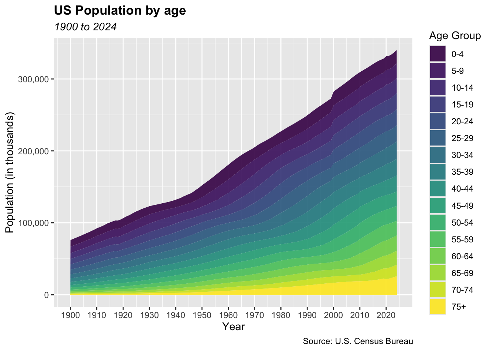
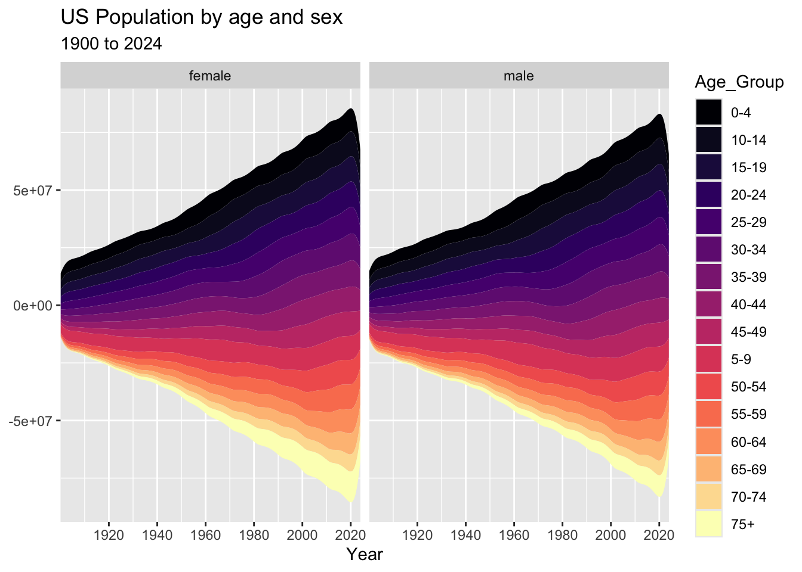
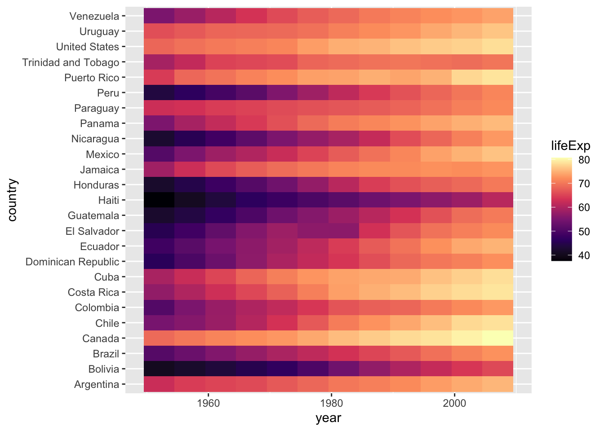
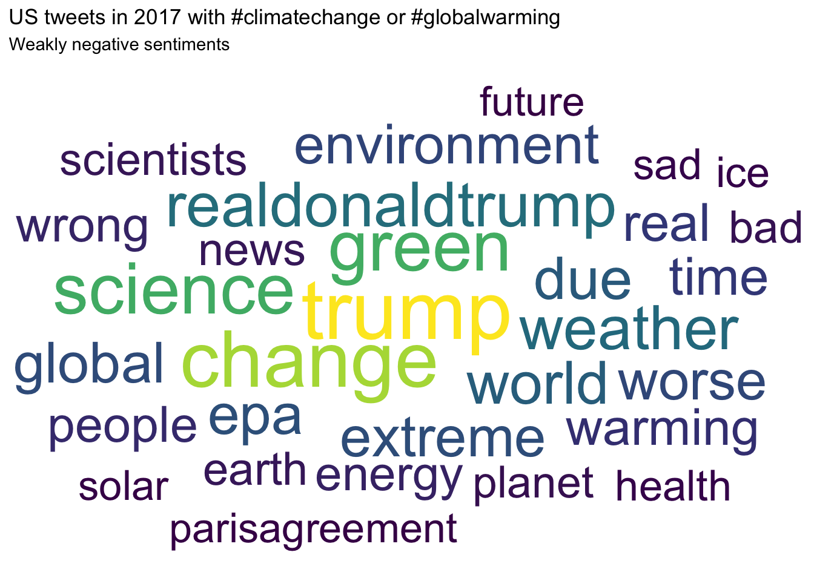

── Conflicts ────────────────────────────────────────── tidyverse_conflicts() ──
✖ readr::col_factor() masks scales::col_factor()
✖ purrr::discard() masks scales::discard()
✖ dplyr::filter() masks stats::filter()
✖ dplyr::lag() masks stats::lag()
ℹ Use the conflicted package (<http://conflicted.r-lib.org/>) to force all conflicts to become errors
library(gapminder)
Warning: package 'gapminder' was built under R version 4.3.3
library(hrbrthemes)library(ggthemes)
Classwork 10 - Advanced ggplot Charts
Question 1. Dumbbell Charts
Question 2. Sloph Charts
Question 3. Area Charts
pop <-read_csv("https://bcdanl.github.io/data/us_population_age_group_5yr_1900_2024_long.csv")
Rows: 6375 Columns: 10
── Column specification ────────────────────────────────────────────────────────
Delimiter: ","
chr (4): sex, age_group, population_basis, age_group_schema
dbl (4): year, age_group_start, age_group_end, population
lgl (1): includes_alaska_hawaii
date (1): reference_date
ℹ Use `spec()` to retrieve the full column specification for this data.
ℹ Specify the column types or set `show_col_types = FALSE` to quiet this message.
pop$age_group <-factor(pop$age_group, levels =rev(unique(pop$age_group)))pop <- pop |>filter(age_group !="all", sex =="both")ggplot(pop,aes(x = year,y = population /1000,fill =fct_rev(age_group))) +geom_area(alpha =0.9) +scale_x_continuous(breaks =seq(1900, 2024, by =10))+scale_y_continuous(labels =label_comma()) +scale_fill_viridis_d()+labs(x ="Year",y ="Population (in thousands)",fill ="Age Group",title ="US Population by age",subtitle ="1900 to 2024",caption ="Source: U.S. Census Bureau" ) +theme(plot.title =element_text(face ="bold"),plot.subtitle =element_text(face ="italic") )
Warning: <ggplot> %+% x was deprecated in ggplot2 4.0.0.
ℹ Please use <ggplot> + x instead.

Question 4. Stream Charts
pop <-read_csv("https://bcdanl.github.io/data/us_population_age_group_5yr_1900_2024_long.csv")
Rows: 6375 Columns: 10
── Column specification ────────────────────────────────────────────────────────
Delimiter: ","
chr (4): sex, age_group, population_basis, age_group_schema
dbl (4): year, age_group_start, age_group_end, population
lgl (1): includes_alaska_hawaii
date (1): reference_date
ℹ Use `spec()` to retrieve the full column specification for this data.
ℹ Specify the column types or set `show_col_types = FALSE` to quiet this message.
pop_filtered <- pop %>%filter(sex !="both", age_group !="all")ggplot(pop_filtered,aes(x = year,y = population,fill = age_group)) +geom_stream(bw =0.6, type ="mirror" ) +facet_wrap(~ sex, scales ="free_x", nrow =1) +scale_fill_viridis_d(option ="magma") +# scale_fill_brewer(palette = "Spectral", direction = -1) +scale_x_continuous(breaks =seq(1920, 2020, 20),expand =c(0, 0) ) +labs(x ="Year",y =NULL, fill ="Age_Group",title ="US Population by age and sex",subtitle ="1900 to 2024" )

Question 5. Alluvial Diagrams
Question 6. Heatmaps
plot_data <- gapminder %>%filter(continent =="Americas")ggplot(plot_data, aes(x = year, y = country, fill = lifeExp)) +geom_tile() +scale_fill_viridis_c(option ="magma")

labs(title ="Life Expectancy in the Americas",x ="Year",y ="Country",fill ="Years") +theme_minimal()
Warning: `aes_string()` was deprecated in ggplot2 3.0.0.
ℹ Please use tidy evaluation idioms with `aes()`.
ℹ See also `vignette("ggplot2-in-packages")` for more information.
ℹ The deprecated feature was likely used in the ggcorrplot package.
Please report the issue at <https://github.com/kassambara/ggcorrplot/issues>.
Rows: 44282 Columns: 1
── Column specification ────────────────────────────────────────────────────────
Delimiter: ","
chr (1): content
ℹ Use `spec()` to retrieve the full column specification for this data.
ℹ Specify the column types or set `show_col_types = FALSE` to quiet this message.
Rows: 6546 Columns: 1
── Column specification ────────────────────────────────────────────────────────
Delimiter: ","
chr (1): content
ℹ Use `spec()` to retrieve the full column specification for this data.
ℹ Specify the column types or set `show_col_types = FALSE` to quiet this message.
# x_cc_neg_weak: tweets with weakly negative sentiment# x_cc_neg_strong: tweets with strongly negative sentiment# DT::datatable(x_cc_neg_weak)# DT::datatable(x_cc_neg_strong)
Text cleaning
custom_remove <-c("climatechange", "globalwarming", "rt", "climate", "ll", "don") weak_top30 <- x_cc_neg_weak %>%# Remove any web links that start with http or https.# Example: "https://something.com"mutate(content =str_remove_all(content, "http[s]?://\\S+")) %>%# Remove Twitter image links specifically, such as pic.twitter.com/xxxxxmutate(content =str_remove_all(content, "pic\\.twitter\\.com/\\S+")) %>%# Replace anything that is NOT a letter or a space with a blank space.# This removes punctuation, numbers, symbols, emojis, etc.mutate(content =str_replace_all(content, "[^A-Za-z\\s]", " ")) %>%# Clean up spacing by shrinking repeated spaces into one space# and trimming extra spaces at the beginning/end.mutate(content =str_squish(content)) %>%# Break the text in the content column into individual words.# The new word column will hold one token (one word) per row.unnest_tokens(word, content) %>%# Remove common stop words like "the", "and", "is", etc.# This helps keep only more meaningful words.anti_join(stop_words, by ="word") %>%filter(!word %in% custom_remove) %>%# Keep only words made of lowercase letters a-z.# This helps filter out weird leftovers or broken tokens.filter(str_detect(word, "^[a-z]+$")) %>%count(word, sort =TRUE) %>%slice_head(n =30) strong_top30 <- x_cc_neg_strong %>%mutate(content =str_remove_all(content, "http[s]?://\\S+")) %>%mutate(content =str_remove_all(content, "pic\\.twitter\\.com/\\S+")) %>%mutate(content =str_replace_all(content, "[^A-Za-z\\s]", " ")) %>%mutate(content =str_squish(content)) %>%unnest_tokens(word, content) %>%anti_join(stop_words, by ="word") %>%filter(!word %in% custom_remove) %>%filter(str_detect(word, "^[a-z]+$")) %>%count(word, sort =TRUE) %>%slice_head(n =30)
Word Clouds
ggplot(weak_top30, aes(label = word, size = n, color = n)) +geom_text_wordcloud() +scale_size_area(max_size =18) +scale_color_viridis_c() +labs(title ="US tweets in 2017 with #climatechange or #globalwarming",subtitle ="Weakly negative sentiments" ) +theme_minimal()

ggplot(strong_top30, aes(label = word, size = n, color = n)) +geom_text_wordcloud() +scale_size_area(max_size =18) +scale_color_viridis_c() +labs(title ="US tweets in 2017 with #climatechange or #globalwarming",subtitle ="Strongly negative sentiments" ) +theme_minimal()